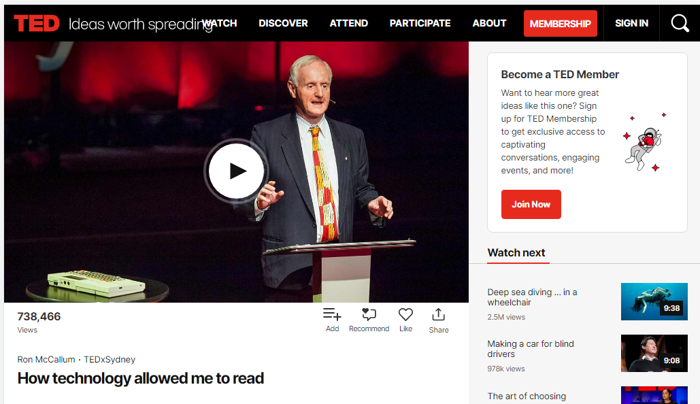
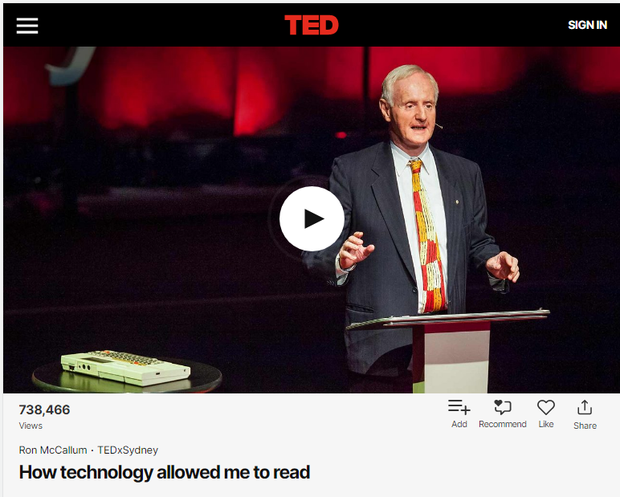
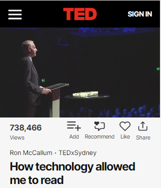

Vidéo adaptée
Conception d’une vidéo adaptée
Assurez-vous que les vidéos sont redimensionnées à mesure que la taille de la zone d’affichage change afin qu’elles ne débordent pas. Vous pouvez y parvenir soit en:
- réglant la propriété CSS
max-width:100%sur l’élément du conteneur de la vidéo, ou en - réglant la propriété CSS
width: 100%sur l’élémentvideo
Les dimensionnements statiques peuvent briser les configurations de la page.
Bon exemple : Vidéo de largeur 100 %
Dans cet exemple, la vidéo utilise la CSS width:100% et est redimensionnée dans tous les modes. Pour voir la conception adaptée en action, consultez le TED Talk Ron McCallum : How technology allowed me to read et redimensionnez la fenêtre de votre navigateur.
Voir les captures d'écran de la vidéo adaptée
Mode bureau de la vidéo
L'exemple commence
L'exemple finit
Mode tablette de la vidéo
L'exemple commence
L'exemple finit
Mode téléphone de la vidéo
L'exemple commence
L'exemple finit